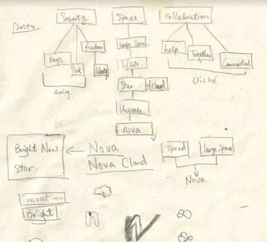
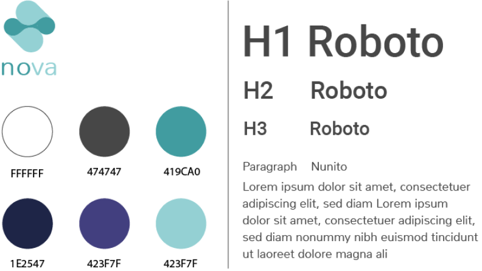

Although it is a concept, a brand identity is still necessary.
I started mapping out name associations, soon enough, I focused on the idea of “space” due to its direct link to cloud service. I chose the brand name “NOVA”, which represents brightness, brilliance and infinity. The brand identity was born accordingly. NOVA, the new star in cloud service industry, conveys advanced technology,
provides seamless workflow and is committed to being transparent with all users.
With the brand values and our target market in mind, I decided to choose blue as our main color scheme.
However, the traditional vibrant blue that is often used for large corporations was not the best fit for the audience.
I wanted a color that speaks trust and innovation. After a few trials, I found that the combination of Tiffany blue with light green shade was a very interesting color for this brand.
It is very modern, stylish and a subtle color for screen use. I designed the logo in different versions based on a cloud shape I drew and ran a preference test.
I then established my style guide for the site according to the result of my logo preference test.



“I have millions of files in the cloud. It takes me forever to find the file I want.” –Jason